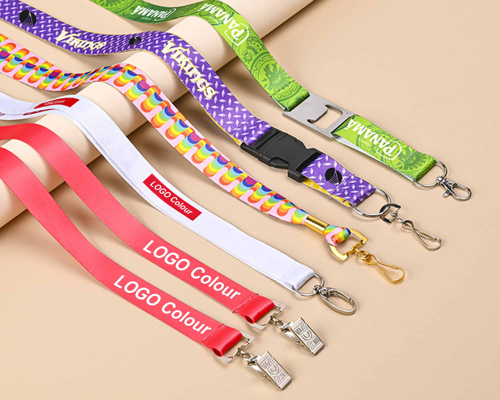

Lanyard range挂绳系列Gama de cordonesGamme de tours de couKordel-SortimentGamma lanyardランヤード一覧랜야드 라인업تشكيلة الحبال

Polyester Lanyards
Custom lanyards, badge reels and fabric accessories in multiple weaving and printing methods多种织造与印刷工艺的定制挂绳、易拉扣与织带配件Cordones, reels y accesorios textiles personalizados en múltiples tejidos e impresionesCordons, enrouleurs de badge et accessoires textiles personnalisés, plusieurs tissages et impressions.Individuelle Lanyards, Badge-Reels und Textilaccessoires in verschiedenen Web- und Druckverfahren.Lanyard, portabadge e accessori in tessuto personalizzati con diverse tecniche di tessitura e stampa.多彩な織り・印刷手法に対応するカスタムランヤード、バッジリール、ファブリック小物。다양한 직조 및 인쇄 방식의 맞춤형 랜야드, 배지 릴, 원단 액세서리.حبال وحاملات شارات وإكسسوارات قماشية مخصصة بطرق نسج وطباعة متعددة.

Nylon Lanyards
Custom lanyards, badge reels and fabric accessories in multiple weaving and printing methods多种织造与印刷工艺的定制挂绳、易拉扣与织带配件Cordones, reels y accesorios textiles personalizados en múltiples tejidos e impresionesCordons, enrouleurs de badge et accessoires textiles personnalisés, plusieurs tissages et impressions.Individuelle Lanyards, Badge-Reels und Textilaccessoires in verschiedenen Web- und Druckverfahren.Lanyard, portabadge e accessori in tessuto personalizzati con diverse tecniche di tessitura e stampa.多彩な織り・印刷手法に対応するカスタムランヤード、バッジリール、ファブリック小物。다양한 직조 및 인쇄 방식의 맞춤형 랜야드, 배지 릴, 원단 액세서리.حبال وحاملات شارات وإكسسوارات قماشية مخصصة بطرق نسج وطباعة متعددة.

Tubular Lanyards
Custom lanyards, badge reels and fabric accessories in multiple weaving and printing methods多种织造与印刷工艺的定制挂绳、易拉扣与织带配件Cordones, reels y accesorios textiles personalizados en múltiples tejidos e impresionesCordons, enrouleurs de badge et accessoires textiles personnalisés, plusieurs tissages et impressions.Individuelle Lanyards, Badge-Reels und Textilaccessoires in verschiedenen Web- und Druckverfahren.Lanyard, portabadge e accessori in tessuto personalizzati con diverse tecniche di tessitura e stampa.多彩な織り・印刷手法に対応するカスタムランヤード、バッジリール、ファブリック小物。다양한 직조 및 인쇄 방식의 맞춤형 랜야드, 배지 릴, 원단 액세서리.حبال وحاملات شارات وإكسسوارات قماشية مخصصة بطرق نسج وطباعة متعددة.

Woven Lanyards
Custom lanyards, badge reels and fabric accessories in multiple weaving and printing methods多种织造与印刷工艺的定制挂绳、易拉扣与织带配件Cordones, reels y accesorios textiles personalizados en múltiples tejidos e impresionesCordons, enrouleurs de badge et accessoires textiles personnalisés, plusieurs tissages et impressions.Individuelle Lanyards, Badge-Reels und Textilaccessoires in verschiedenen Web- und Druckverfahren.Lanyard, portabadge e accessori in tessuto personalizzati con diverse tecniche di tessitura e stampa.多彩な織り・印刷手法に対応するカスタムランヤード、バッジリール、ファブリック小物。다양한 직조 및 인쇄 방식의 맞춤형 랜야드, 배지 릴, 원단 액세서리.حبال وحاملات شارات وإكسسوارات قماشية مخصصة بطرق نسج وطباعة متعددة.
Reflective Lanyards
Custom lanyards, badge reels and fabric accessories in multiple weaving and printing methods多种织造与印刷工艺的定制挂绳、易拉扣与织带配件Cordones, reels y accesorios textiles personalizados en múltiples tejidos e impresionesCordons, enrouleurs de badge et accessoires textiles personnalisés, plusieurs tissages et impressions.Individuelle Lanyards, Badge-Reels und Textilaccessoires in verschiedenen Web- und Druckverfahren.Lanyard, portabadge e accessori in tessuto personalizzati con diverse tecniche di tessitura e stampa.多彩な織り・印刷手法に対応するカスタムランヤード、バッジリール、ファブリック小物。다양한 직조 및 인쇄 방식의 맞춤형 랜야드, 배지 릴, 원단 액세서리.حبال وحاملات شارات وإكسسوارات قماشية مخصصة بطرق نسج وطباعة متعددة.
Heat Transfer Lanyards
Custom lanyards, badge reels and fabric accessories in multiple weaving and printing methods多种织造与印刷工艺的定制挂绳、易拉扣与织带配件Cordones, reels y accesorios textiles personalizados en múltiples tejidos e impresionesCordons, enrouleurs de badge et accessoires textiles personnalisés, plusieurs tissages et impressions.Individuelle Lanyards, Badge-Reels und Textilaccessoires in verschiedenen Web- und Druckverfahren.Lanyard, portabadge e accessori in tessuto personalizzati con diverse tecniche di tessitura e stampa.多彩な織り・印刷手法に対応するカスタムランヤード、バッジリール、ファブリック小物。다양한 직조 및 인쇄 방식의 맞춤형 랜야드, 배지 릴, 원단 액세서리.حبال وحاملات شارات وإكسسوارات قماشية مخصصة بطرق نسج وطباعة متعددة.
Eco-Friendly Lanyards
Custom lanyards, badge reels and fabric accessories in multiple weaving and printing methods多种织造与印刷工艺的定制挂绳、易拉扣与织带配件Cordones, reels y accesorios textiles personalizados en múltiples tejidos e impresionesCordons, enrouleurs de badge et accessoires textiles personnalisés, plusieurs tissages et impressions.Individuelle Lanyards, Badge-Reels und Textilaccessoires in verschiedenen Web- und Druckverfahren.Lanyard, portabadge e accessori in tessuto personalizzati con diverse tecniche di tessitura e stampa.多彩な織り・印刷手法に対応するカスタムランヤード、バッジリール、ファブリック小物。다양한 직조 및 인쇄 방식의 맞춤형 랜야드, 배지 릴, 원단 액세서리.حبال وحاملات شارات وإكسسوارات قماشية مخصصة بطرق نسج وطباعة متعددة.
Cord Lanyards
Custom lanyards, badge reels and fabric accessories in multiple weaving and printing methods多种织造与印刷工艺的定制挂绳、易拉扣与织带配件Cordones, reels y accesorios textiles personalizados en múltiples tejidos e impresionesCordons, enrouleurs de badge et accessoires textiles personnalisés, plusieurs tissages et impressions.Individuelle Lanyards, Badge-Reels und Textilaccessoires in verschiedenen Web- und Druckverfahren.Lanyard, portabadge e accessori in tessuto personalizzati con diverse tecniche di tessitura e stampa.多彩な織り・印刷手法に対応するカスタムランヤード、バッジリール、ファブリック小物。다양한 직조 및 인쇄 방식의 맞춤형 랜야드, 배지 릴, 원단 액세서리.حبال وحاملات شارات وإكسسوارات قماشية مخصصة بطرق نسج وطباعة متعددة.
Badge Reels
Custom lanyards, badge reels and fabric accessories in multiple weaving and printing methods多种织造与印刷工艺的定制挂绳、易拉扣与织带配件Cordones, reels y accesorios textiles personalizados en múltiples tejidos e impresionesCordons, enrouleurs de badge et accessoires textiles personnalisés, plusieurs tissages et impressions.Individuelle Lanyards, Badge-Reels und Textilaccessoires in verschiedenen Web- und Druckverfahren.Lanyard, portabadge e accessori in tessuto personalizzati con diverse tecniche di tessitura e stampa.多彩な織り・印刷手法に対応するカスタムランヤード、バッジリール、ファブリック小物。다양한 직조 및 인쇄 방식의 맞춤형 랜야드, 배지 릴, 원단 액세서리.حبال وحاملات شارات وإكسسوارات قماشية مخصصة بطرق نسج وطباعة متعددة.
Dog Leashes & Collars
Custom lanyards, badge reels and fabric accessories in multiple weaving and printing methods多种织造与印刷工艺的定制挂绳、易拉扣与织带配件Cordones, reels y accesorios textiles personalizados en múltiples tejidos e impresionesCordons, enrouleurs de badge et accessoires textiles personnalisés, plusieurs tissages et impressions.Individuelle Lanyards, Badge-Reels und Textilaccessoires in verschiedenen Web- und Druckverfahren.Lanyard, portabadge e accessori in tessuto personalizzati con diverse tecniche di tessitura e stampa.多彩な織り・印刷手法に対応するカスタムランヤード、バッジリール、ファブリック小物。다양한 직조 및 인쇄 방식의 맞춤형 랜야드, 배지 릴, 원단 액세서리.حبال وحاملات شارات وإكسسوارات قماشية مخصصة بطرق نسج وطباعة متعددة.